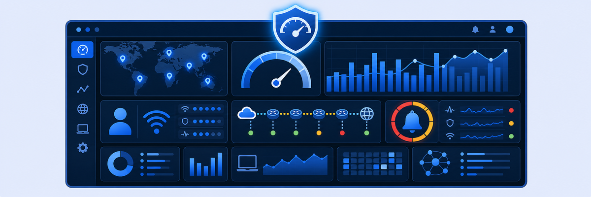

Lab 14: Navigate the Incident, Self-Service, Application Overview Dashboards
SDC scenario (Labs 14–16): Your organization has deployed Zscaler Digital Experience to proactively monitor network and device performance for all users. You are expected to monitor trends and incidents that affect multiple users and take corrective action before issues escalate. Your team also troubleshoots reports of poor user experience and identifies the root cause.
Lab 14 scenario: As the Zscaler administrator, you know your organization relies on ZDX to monitor and improve user experience across endpoints, networks and applications. Your role is to analyze the signals from ZDX dashboards (Incident, Self-Service, Application Overview and User Overview) and use this data to find the root cause of user experience issues. By understanding key performance trends and metrics, you will make informed decisions to improve the digital experience across the organization.
Objectives: By the end of this lab, you will:
- Navigate and analyze ZDX's dashboards, including Performance Overview, Incidents, Self-Service, Application Overview and User Overview.
- Analyze root cause indicators for application, network and user issues.
- Troubleshoot key performance problems and plan corrective actions.

Solutions Demo Center (SDC) labs
Why read-only? The hands-on labs so far were read-write. Labs 14–16 run in the Solutions Demo Center (SDC) in read-only mode, because of technical dependencies such as report generation timelines (which can take 24 hours or more) and restricted student access to some integrated services. The SDC exposes you to key features and real-world dashboards, with real data on policy enforcement, analytics and governance workflows.
Access the Solutions Demo Center (SDC)
- Go to
https://console.zscaler.com - Log in with the SDC credentials from the Credentials tab in the left panel of CloudShare:
- Username: <Student Admin User Name>
- Password: <One Time Password>
Note: For each lab, you can follow the step-by-step instructions or challenge yourself: read the problem statement and find the root cause on your own before continuing. This builds troubleshooting and critical thinking skills.
ZDX turns "the app is slow" into numbers: a 0–100 ZDX Score per user and app, built from probes that measure every leg from the device to the application.
- Users rarely open a ticket the first time an app is slow. Why is proactive monitoring (Incidents, Most Impacted Applications) more valuable than waiting for helpdesk calls?
- One user has a Poor score for Microsoft Login while everyone else in the same office is Good. Which dashboards would you move through, and in what order, to narrow down the cause?
- The lab's closing note says troubleshooting in ZDX is probe-driven. Why does a custom (non-predefined) application give you no ZDX data until you configure probes for it?
In this task, you take the role of a Zscaler administrator and explore the ZDX performance dashboard (Map View), including Most Impacted Applications, Regions by ZDX Score and the ZDX Score.
1 Log in to the Experience Center
- Go to
https://console.zscaler.comand sign in with the SDC account:- Username: SDC Admin Username (in your lab access information)
- Password: SDC Password
Note: When you log in to your SDC account you'll be taken to Multi-factor Authentication. Click Skip and move on to the next step.
2 Open the Map View
- In the Search menu, type
Map Viewand click it. - At the top, select 24 Hours from the drop-down list to set the reporting interval.
3 Explore the key dashboard features
- Review Most Impacted Applications: scroll through the list and click an application (e.g., Zoom) to drill into its performance metrics.
- Analyze geographic performance in the Regions by ZDX Score map:
- Click a location to see its ZDX Score and the total number of users in that region.
- Use the + / − controls to zoom in or out.
- Click Draw Fence and use your mouse to select a geographic area.
- Click Filter Selection and review the fenced region's performance metrics.
- Click Reset (top-right corner of the map) to clear the applied settings, if needed.
4 Review the ZDX Score details for selected applications
- Scroll down to view the ZDX Score for the selected application.
- Click Add Another Application at the bottom to compare the ZDX scores of more applications.
5 Filter by geolocation
- At the top of the ZDX dashboard, click Geolocations, select a location from the drop-down, and click Apply filters.
- View the Performance Overview reports for the chosen location.
- Click Reset to clear the filter.
6 Explore the filtering options
- At the top of Map View, explore the filtering options: Departments, Zscaler Locations, User Groups, Geolocations, Location Groups, Last Mile ISPs and Operating Systems.
- Select filters, apply them, and review the results.
- View the ZDX Score based on the filters applied.
7 Review the Wi-Fi Dashboard
- Type
WiFiin the Search menu and click it. - Review these Wi-Fi parameters:
- Total Access Points
- Wi-Fi Performance of Access Points
- Total Devices Connected
In this task, you will analyze incident trends and use self-service insights to identify key issues affecting user application performance.
1 Explore the Incidents Dashboard
- In the Search menu, type
Incidents(Digital Experience > Alerts) and click it. - Review the information for the different incident areas.
- Scroll down to the Incidents by Epicenters map, click a marker and select one of the incidents.
- Click the View Incident Details link and review the collected metrics.
Note: If the Incidents By Epicenters dashboard shows “Try again later. If this persists, contact Zscaler Support.”, refresh the page and try again.
2 Explore the Self Service Dashboard
- Search for
Self Service(Digital Experience > Users) in the Search menu. - Explore the summary graphs about notifications in the selected timeframe.
In this task, you will investigate predefined and custom application metrics to identify problem patterns and potential root causes for user or device issues.
1 Open Applications Overview and find the lowest score
- In the Search menu, type
Applications Overview. - Sort the applications table by ZDX Score.
- Click the application with the lowest ZDX Score.
Note: Different applications have different dashboard views. For example, UCaaS applications don't have a Page Fetch Time tab.
2 Analyze the metrics displayed
- Review the Web & Network Probe Performance metrics, along with Real-User Performance, Errors, the ZDX Score Trend and Users by Experience Score.
3 View the impact dimensions
- Click the Web Probe Performance tab to view the application's configured probe status.
- Scroll down to view the impacted Departments, Regions and Locations.
In this task, you will analyze user-specific metrics and explore reports to troubleshoot and improve user experience.
1 Open Users Overview and scope by application
- In the Search menu, type
Users Overview(Digital Experience > Users). - Select an application from the Applications drop-down list, then click Apply filter.
2 Find impacted users
- Use the ZDX Score drop-down (Poor, Okay, Good) to filter the users table.
- Select a user with Poor or Okay performance for deeper analysis.
3 Review the user and device context
- Review information such as OS type, IP addresses and other device-specific metrics.
- Click View More Device Details.
- Review the Hardware, Network and Software tabs, then click Done.
4 Review application performance for this user
- View the selected application's ZDX Score Over Time graph for this user.
5 Review the Web Probe metrics
- Scroll down to the Web Probe Metrics graphs.
- Click the graph-selector icon to select or unselect web probe graphs as needed.
- Click anywhere on a graph to get more details about spikes in Page Fetch Time, Server Processing Time, and so on.
6 Review the Cloud Path metrics
- Scroll down to the Cloud Path Probe Metrics graphs.
- View the Cloud Path graph for Latency and Packet Loss.
- Select or unselect any of the Cloud Path legs as needed.
- Scroll down to the Hop View and expand the leg with the highest differential latency (shown in orange).
- Mouse over a hop to get more information.
- Click Command Line View and identify hops with high packet loss and/or latency.
Note: ZDX probes collect application performance data. Predefined applications include built-in probes by default, while custom applications need probes configured manually. Probes give both baseline and real-time visibility into where a problem is before user impact escalates. Troubleshooting in ZDX is probe-driven: probes generate the performance data that lets administrators pinpoint the exact hop or layer causing degradation, rather than relying on user complaints or assumptions. Understanding how probes work is essential for interpreting ZDX metrics, trends and alerts correctly, and for effective root-cause analysis.